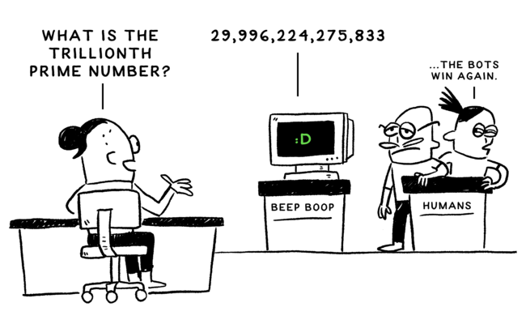

Computers can make decisions, and they can do things very very fast.
An important part of computer science is understanding how computers can make the right decisions. In this chapter, you’ll learn how computers use lots of simple decisions to make complex decisions quickly and precisely.